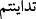

bitirdiğiniz peşin bir ticaret olursa, bu durum farklıdır. Bu durumda onu
yazmamanızda sizin için bir sakınca yoktur. (Genellikle) alış-veriş yaptığınızda,
şahit tutun. Ne yazan, ne de şahit zarara uğratılsın. Eğer bunu yaparsanız (zarar
verirseniz) şüphe yok ki bu, sizin yoldan çıkmanız demektir. Allah’tan korkun.
Allah size gerekli olanı öğretiyor. Allah her şeyi bilmektedir.
283. Yolculukta olur da, yazacak kimse bulamazsanız (borca karşılık) alınmış bir
rehin de yeterlidir. Birbirinize bir emanet bırakırsanız, emanet bırakılan kimse
emaneti sahibine versin ve (bu hususta) Rabbi olan Allah’tan korksun. Şahitliği,
bildiklerinizi gizlemeyin. Kim onu gizlerse, o bilsin ki onun kalbi günahkârdır. Allah,
yapmakta olduklarınızı bilir.
Burada ayrıca borcun (deyn) zikredilmesi, (
) “tedâyentüm” fiilinden mücâzât
mânâsının anlaşılmaması içindir. Aynı zamanda borcun süreli veya süresiz
olabileceğine işârettir.
“Ecel-i müsemmâ”dan yani belirlenmiş süreden maksad günler, aylar, yıllar gibi ilim
ifâde eden ve cehâleti ortadan kaldıran zaman birimleridir. Yoksa hasad, harman ve
hacıların dönüşü gibi kapalılık ifâde eden şeyler değildir.
Borçları yazmak, “ne kadar olduğunu ve ne zaman ödeneceğini” belirtmek münâkaşayı
ortadan kaldırır ve işin daha sağlam olmasını sağlar. Âlimlerden çoğuna göre buradaki
yazınız emri, bu hükmün müstehab olduğunu göstermek içindir, vücûb ifâde etmez.
“Bir kâtip anlaşmanızı aranızda adâletle yazsın.” Bu emredilen yazım şeklinin nasıl
olacağını belirtmektedir. Kâtibin, borç alıp veren iki kişinin ortasında durarak onlardan
birinin sözüyle yetinmeyerek her ikisinin sözlerini yazması gerektiğini ifâde etmektedir.
Kendisine yazım işi tevdî edilen kâtibin adâletli olması, iki taraftan herhangi birine
meyletmemesi, fazla veya az yazmaması, demektir.
Âyet, borç alıp veren iki kişiye bilgili ve mütedeyyin bir kâtip bulmalarını
emretmektedir. Ancak bu vasıfta olan bir kâtibin yazdığı vesîka, güvenilir olur ve
böylece şerîata göre de adâlet tahakkuk etmiş bulunur.
Kâtiplerden hiçbirisi borcu Allah’ın kendisine öğrettiği gibi yazmaktan geri durmasın.
Kendisine bildirilen husûsu olduğu gibi yazsın. Üzerinde hak olan kimse; yani borçlu da
yazdırsın. Çünkü üzerinde şâhidlik yapılan odur. İkrâr edenin de o olması gerekir.
Rabbi olan Allah’dan korksun ve kâtibe yazdırdığı borcundan hiçbir şey eksik
söylemesin. Burada Allah ism-i celîli ile Rabb sıfatı sakınmada mübâlağa için
beraberce zikredilmiştir. Âyette: “Borçlu borcunu asla eksik yazdırmasın!”
buyrulmuştur. Çünkü borçlu eksik yazdırabilir. Kâtibe gelince, o eksik de yazabilir,
fazla da. Yine âyette: “Allah’tan korksun!” emrinden sonra: “Borcunu asla eksik
yazdırmasın!” nehyi beraberce zikredilmiştir. Çünkü burada yasaklanan şeyi yapmayı
gerektirecek etkenler mevcuddur. Zira insan kendisinden zararı defetmeyi ve borcu